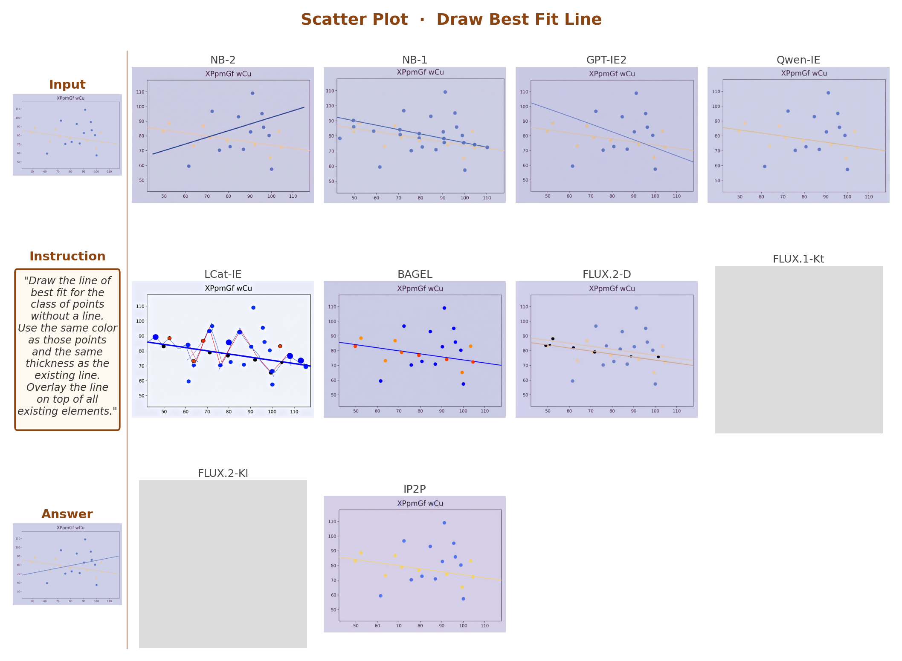
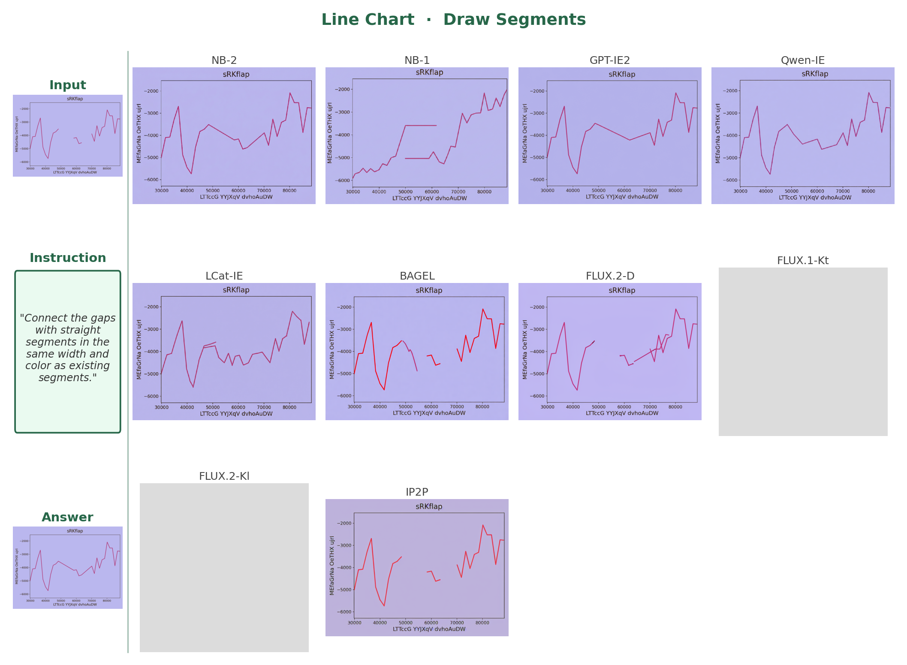
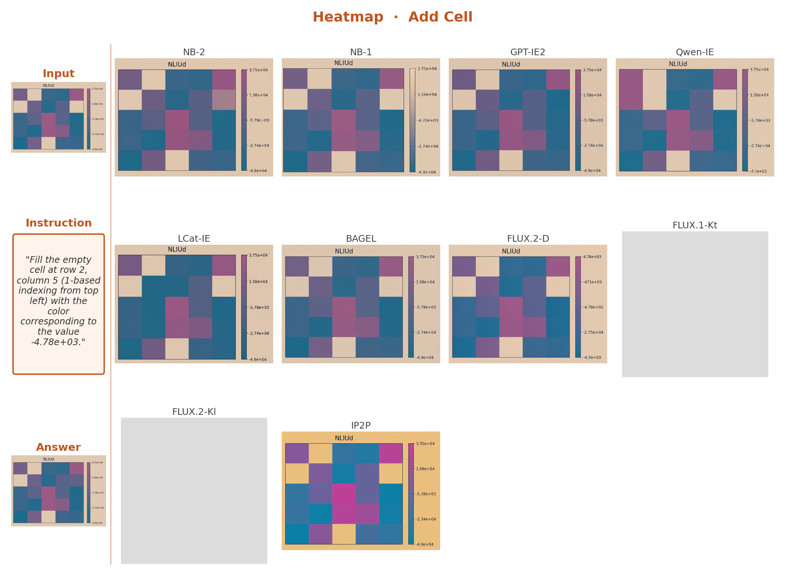
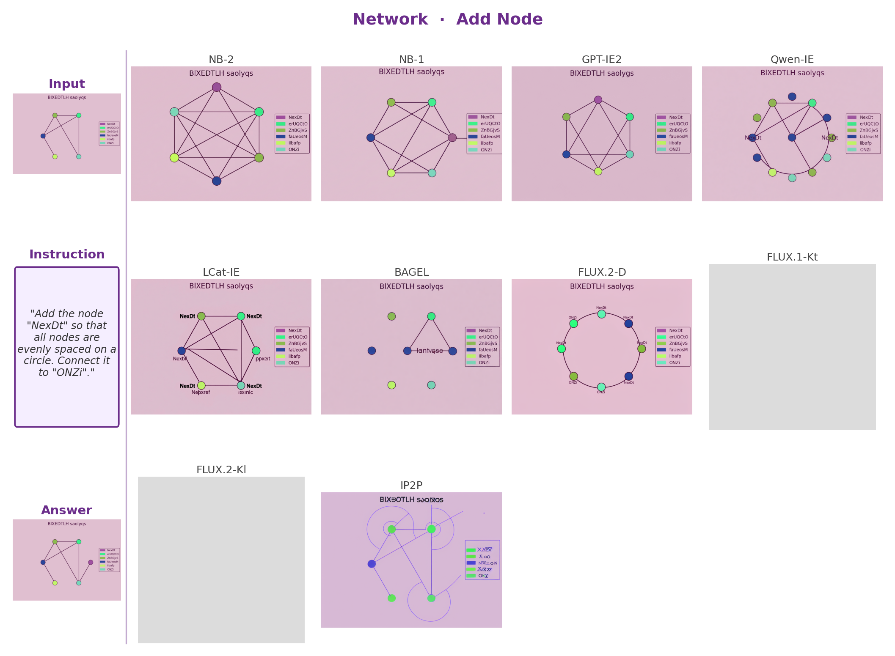

TinyGrafixBench
Failures on primitives
generalize to real charts.
We extended PaintBench's evaluation framework to 5 chart types (600 problems). Models that can't edit geometric shapes can't edit data visualizations either — rankings are nearly identical.
Key Finding
The #1 model on PaintBench (NB-2, 23.5%) is #1 on TinyGrafixBench (16.6%). The #2 model (GPT-IE2, 21.8%) is #2 (15.6%). The gap between frontier models and the rest persists across all 5 chart types.
5 Chart Types — Example Problems (Input → Ground Truth)
Bar Chart

NB-2: 37.4%
Add · Sort · Remove · Recolor
Scatter Plot

GPT-IE2: 6.8%
Best-fit · Swap axes · Outlier · Recolor
Line Chart

GPT-IE2: 16.0%
Segments · Normalize · Filter · Shade
Heatmap

NB-2: 21.9%
Add cell · Shift · Mask · Colormap
Network

NB-2: 5.6%
Add · Swap · Remove · Recolor
Ranking Consistency — PaintBench vs TinyGrafixBench (mIoU %)
Model
PaintBench
TinyGrafixBench
1
Nano Banana 2 ↔ same rank
23.5%
16.6%
2
GPT Image Edit 2 ↔ same rank
21.8%
15.6%
3
Nano Banana 1
13.9%
5.6%
4–11
All other models
≤7.2%
≤3.4%